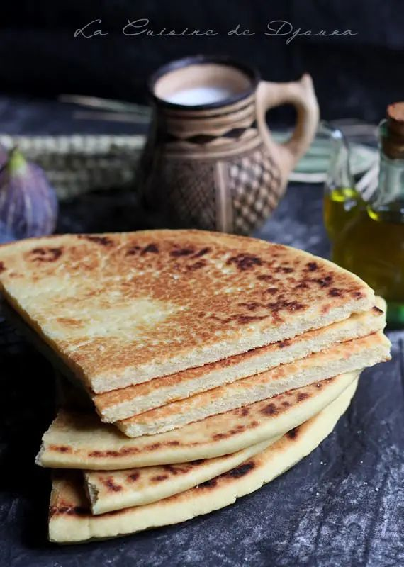
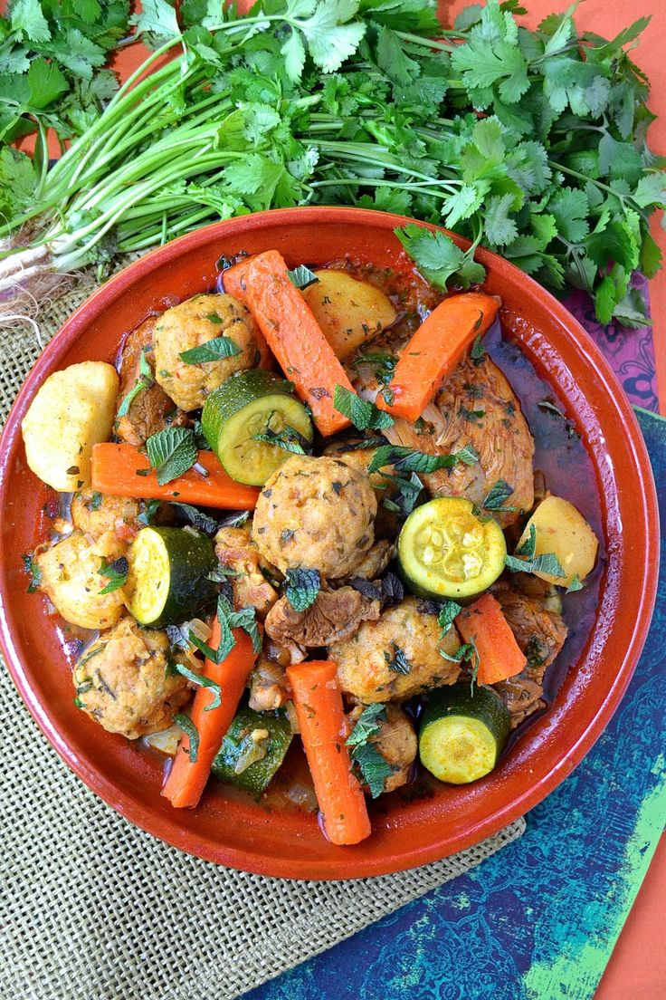
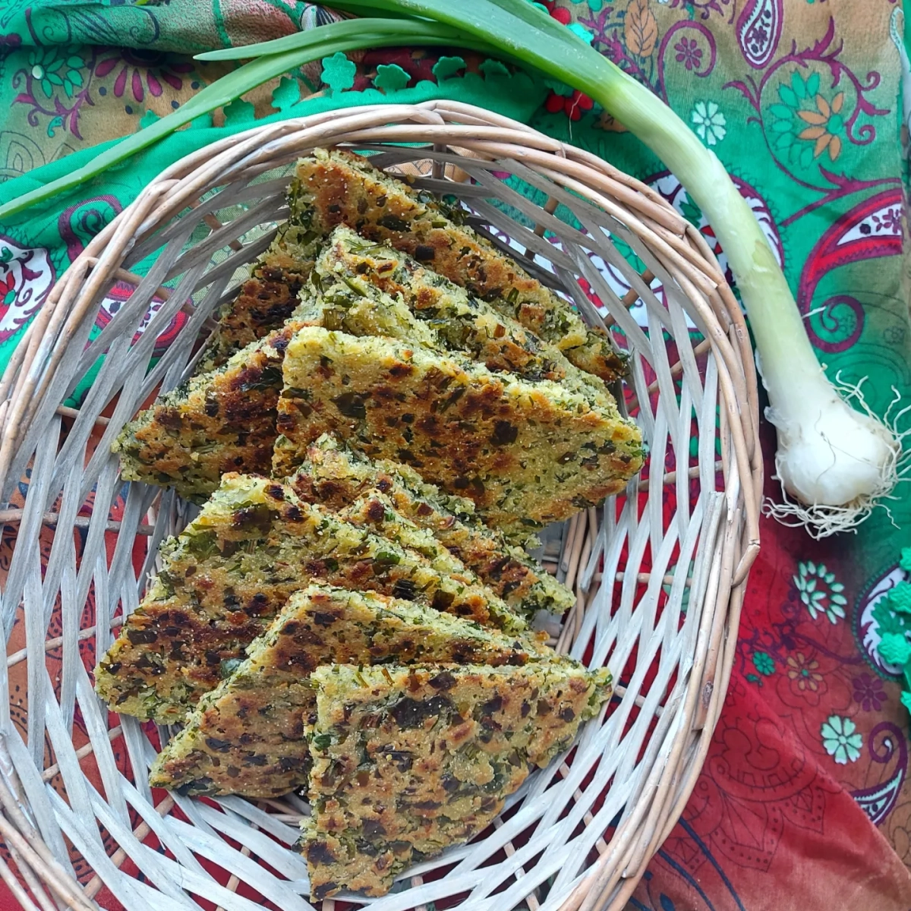
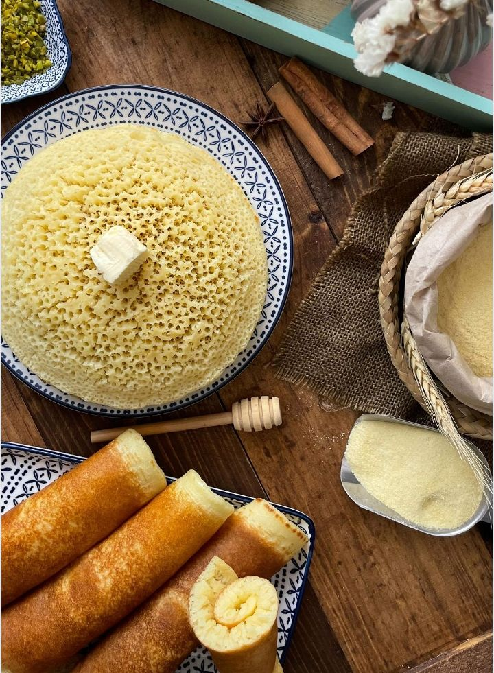

Aghroum: The Traditional Kabyle Bread
Aghroum is one of the most iconic elements of Kabyle cuisine. This traditional bread, simple yet deeply rooted in the daily lives of the people, represents both culinary heritage and a strong connection to the mountainous lands of Kabylia.
Regional Variations
Béjaïa and Coastal Regions: Sometimes enriched with dried figs or olives for a sweet and savory twist.
Tizi Ouzou and Mountainous Areas: Made with wild herbs or salted butter for a rustic flavor.
Symbolism and Consumption
Aghroum is not just food; it is a symbol of sharing and togetherness. It accompanies almost every meal, served with pure olive oil, fermented milk (lben), or as a base for dishes like chakchouka (Kabyle ratatouille). A Bread for Everyday and Festive Occasions Aghroum is ever-present, whether in daily life or during grand celebrations. For ceremonies or events like Yennayer (the Amazigh New Year), it is often prepared with extra ingredients like eggs or nuts. This bread is more than just sustenance—it embodies the connection to the land, traditions, and an authentic way of life passed down through generations.


Seksu: The Iconic Kabyle Couscous
Seksu, or couscous, is the cornerstone of Kabyle cuisine and one of the most celebrated dishes in Amazigh culture. Renowned for its versatility and deep cultural significance, seksu is both a staple food and a symbol of hospitality, often prepared during gatherings, ceremonies, and festive occasions.
Types of Seksu in Kabylia
Seksu n Lkhdar (Vegetable Couscous)
A classic version served with a variety of fresh vegetables like zucchini, carrots, turnips, and potatoes, cooked in a spiced tomato-based sauce.
Often accompanied by lamb, chicken, or goat meat, depending on availability and preference.
Seksu Tiwizi (Communal Couscous)
A large, collective preparation made for community events or traditional gatherings. It often includes a variety of meats and vegetables to cater to large groups.
Seksu n 7 Lhwal (Couscous of 7 Varieties)
Seksu n 7 Lhwal, or "couscous of 7 varieties," is a rich and festive version of couscous, prepared with seven main ingredients symbolizing abundance and prosperity. This dish is often associated with important celebrations such as weddings, births, or Yennayer (the Amazigh New Year). The number 7 holds special significance in Amazigh culture, representing luck and blessings.
Seksu n Taqvayt (Fava Bean Couscous)
Seksu n Taqvayt, or fava bean couscous, is a rustic and nutritious variation of Kabyle couscous, highly appreciated for its simplicity and rich natural flavors. This dish is often prepared in spring when fresh fava beans are abundant or with dried fava beans during other seasons. This couscous is valued for its simplicity and nutritional benefits. Rich in plant-based proteins, it is a balanced meal often served with lben (fermented milk) or a light salad.
Tikourbabine: Kabyle Semolina Dumplings
Tikourbabine, also known as semolina dumplings, is a traditional Kabyle dish made from hand-rolled semolina balls, typically served in a flavorful sauce. This rustic, simple, and hearty dish is deeply rooted in Amazigh culinary culture and is often associated with family meals or special occasions.
A Dish of Tradition and Sharing
Tikourbabine is a dish that embodies values of hospitality and simplicity. It is often prepared during cold days for its comforting and nourishing qualities.
In some regions, it is also associated with religious celebrations or community events.
This dish showcases the creativity of the Kabyle people, who transform simple ingredients into flavorful and symbolic meals, emphasizing the importance of sharing and togetherness.


Aghroum Lahwal: The Bread of Celebrations and Special Occasions
Aghroum Lahwal, literally "bread of varieties," is a Kabyle specialty prepared for celebrations and significant events such as weddings, baptisms, or Yennayer (the Amazigh New Year) This bread, richer than traditional bread, is known for its soft texture and unique flavors.
A Symbolic Bread
Aghroum Lahwal represents abundance and prosperity. Its preparation, often a collective effort, is a moment of sharing and togetherness, where women from the family or village gather to knead and bake the bread.
This bread is often served with rich dishes like couscous or spiced sauces and is shared among guests as a symbol of unity and generosity. More than just food, aghroum lahwal is a cultural expression deeply rooted in Kabyle traditions.
Tighrifine: Kabyle Pancakes
Tighrifine, also known as Kabyle pancakes, are a traditional dish that embodies the simplicity and warmth of Kabyle cuisine. These thin, soft pancakes are made with basic ingredients and are often enjoyed as a snack, breakfast, or alongside main dishes.
Serving and Variations
With honey and melted butter for a sweet version.
With olive oil and a pinch of salt for a savory touch.
A Dish of Simplicity and Togetherness
Tighrifine represents the simplicity and communal spirit of Kabyle cuisine. Easy to prepare, they are perfect for feeding a whole family using readily available ingredients. They are also enjoyed during moments of rest, often shared with family over a cup of mint tea. These traditional pancakes showcase the creativity of Kabyle people in turning simple ingredients into delicious, nourishing meals.
